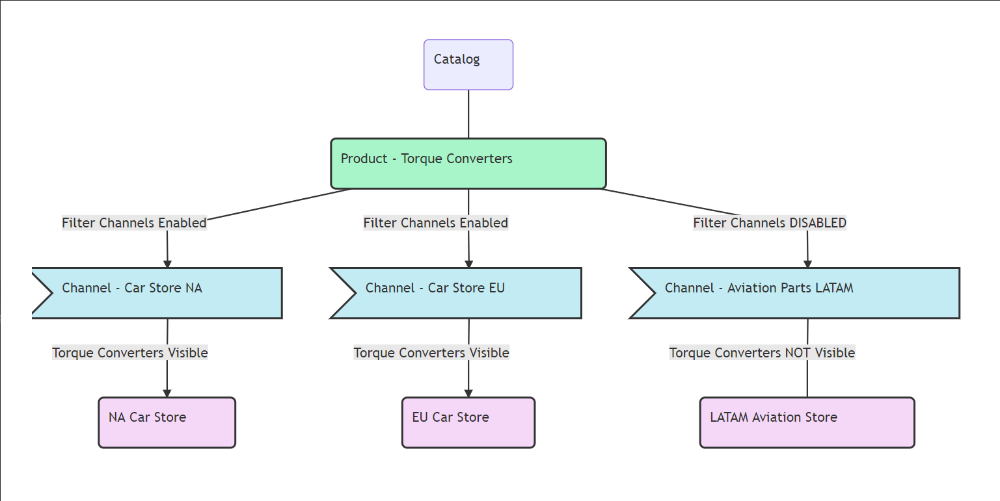
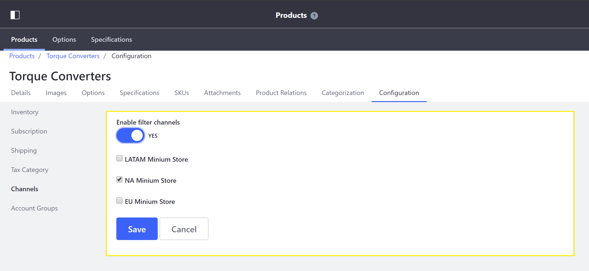

Configuring Product Visibility by Site Using Channels¶
By default in Liferay Commerce Products added to any catalog are visible globally - products are visible across all sites added to a Liferay Commerce installation. Store administrators may want to limit product visibility to particular channels based on their criteria.
For the purpose of this example, we will consider a scenario of a multi-region seller providing products from a single catalog.

To learn more about the using Channels in Liferay Commerce, see: Introduction to Channels.
Prerequisites¶
- More than one site has been created.
- Each site has an associated channel.
- Products have been added to a catalog.
Configuring Product Filter Channels¶
To configure a product to be available in a specific channel, follow these steps:
Navigate to the Control Panel → Commerce → Products.
Click a product (Torque Converters in this example).
Click the Configuration sub-tab.
Click the Channels sidebar option.
Switch the Enable filter channels toggle to Yes.
Check the boxes for each Channel (in this case, the NA Minium Store) where the product should be visible.

Click Save.
The product will be visible only in the selected Channels.